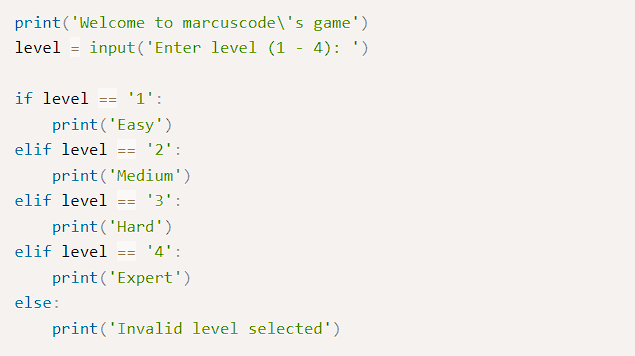
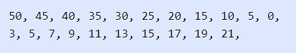

Python
จัดทำโดย Pawat Narkjuathong
LECTURE - 00 introduction
Python
Python เป็นภาษาการเขียนโปรแกรมที่ใช้อย่างแพร่หลายในเว็บแอปพลิเคชัน การพัฒนาซอฟต์แวร์ วิทยาศาสตร์ข้อมูล และแมชชีนเลิร์นนิง (ML) นักพัฒน...าใช้ Python เนื่องจากมีประสิทธิภาพ เรียนรู้ง่าย และสามารถทำงานบนแพลตฟอร์มต่างๆ ได้มากมาย ทั้งนี้ซอฟต์แวร์ Python สามารถดาวน์โหลดได้ฟรี ผสานการทำงานร่วมกับระบบทุกประเภท และเพิ่มความเร็วในการพัฒนา วิธีติดตั้ง Python Visual Studio Code Visual Studio Code หรือ VSCode เป็นโปรแกรม Code Editor ที่ใช้ในการแก้ไขและปรับแต่งโค้ด จากค่ายไมโครซอฟท์ มีการพัฒนาออกมาในรูปแบบของ OpenSource จึงสามารถนำมาใช้งานได้แบบฟรี ๆ ที่ต้องการความเป็นมืออาชีพ ซึ่ง Visual Studio Code นั้น เหมาะสำหรับนักพัฒนาโปรแกรมที่ต้องการใช้งานข้ามแพลตฟอร์ม รองรับการใช้งานทั้งบน Windows, macOS และ Linux สนับสนุนทั้งภาษา JavaScript, TypeScript และ Node.js สามารถเชื่อมต่อกับ Git ได้ นำมาใช้งานได้ง่ายไม่ซับซ้อน มีเครื่องมือส่วนขยายต่าง ๆ ให้เลือกใช้อย่างมากมาก ไม่ว่าจะเป็น 1.การเปิดใช้งานภาษาอื่น ๆ ทั้ง ภาษา C++, C#, Java, Python, PHP หรือ Go 2.Themes 3.Debugger 4.Commands เป็นต้น วิธีติดตั้ง visualstudio code
 GitHub
GitHubGitHub คือ website Git (version control repository) ที่อยู่บน internet มีการทำงานแบบเดียวกับ Git เลย แต่สามารถเข้าถึงข้อมูลและจัดการไปผ่าน web โดยไม่ต้องเสียเงิน หรือลงทุกตั้ง server เพื่อติดตั้ง Git เองเลย แต่ code project ทั้งหมดจะถูกแจกจ่ายให้คนอื่นๆสามารถเห็นได้ด้วย วิธีสมัคร Github

Git เป็นเครื่องมือที่ช่วยจัดการเวอร์ชันของโค้ดให้กับเรา โดยจะเก็บประวัติว่าไฟล์แต่ละไฟล์ถูกสร้าง/ลบ/แก้ไขโดยใคร เมื่อไหร่ และอย่างไรเอาไว้ทั้งหมด ทำให้เราสามารถติดตามการเปลี่ยนแปลงของโค้ดได้ตลอด หรือแม้กระทั่งย้อนเวลาโค้ดกลับไปก่อนตอนที่จะพังก็ยังทำได้ ดาวน์โหลด และ ติดตั้งยังไง ?
สำหรับการติดตั้งนั้นก็สามารถเข้าไปดาวน์โหลดในเว็บไซต์ของ Git ได้เลย มีตัวติดตั้งให้ติดตั้งกันง่ายๆ โหลดไฟล์จากหน้าเว็บได้เลย
 จากนั้นก็เปิดไฟล์
แล้วก็กด install เป็นอันเรียบร้อย
จากนั้นก็เปิดไฟล์
แล้วก็กด install เป็นอันเรียบร้อย
LECTURE - 01 DATA TYPES, VARIABLES AND EXPRESSION
DATA TYPES, VARIABLES AND EXPRESSION>
ตัวแปร(Variable) และ ประเภทข้อมูล (Data Type)
ตัวแปร (Variable)
ตัวแปร (variable) คือ ชื่อที่ตั้งขึ้นมาเพื่ออ้างอิงถึงตำแหน่งหน่วยความจำที่ใช้จัดเก็บข้อมูล และสามารถเรียกค่าข้อมูลที่เก็บอยู่ออกมาใช้ กระบวนการสร้า...งตัวแปรเรียกว่าการประกาศตัวแปร กฎการตั้งชื่อตัวแปรชื่อของตัวแปรต้องขึ้นต้นด้วย a-z, A-Z หรือเครื่องหมาย _
ภายในชื่อของตัวแปลประกอบด้วย a-z, A-Z, 0–9 หรือ เครื่องหมาย _
ห้ามเป็นช่องว่างหรือเครื่องหมายอื่น
ตัวอักษรพิมพ์เล็กและพิมพ์ใหญ่จะแตกต่างกัน (Case Sensitive)
ห้ามใช้คำสงวน (reserved words) ในการตั้งชื่อ
ตัวอย่างการตั้งชื่อตัวแปร

ตัวอย่างการสร้างชื่อตัวแปร
ชนิดของข้อมูล
1. ข้อมูลชนิดตัวเลข (Number)
- int ตัวเลขจำนวนเต็ม เช่น 1, 2, 3, 4, 5
- float ตัวเลขมีทศนิยม เช่น 1.2, 2.5, 5.43, 9.345
- complex ตัวเลขจำนวนเชิงซ้อน โดยเขียนอยู่ในรูปแบบ x+yi โดย
เรียก x ว่า ส่วนจริง เรียก y ว่า ส่วนจินตภาพ ส่วน i ในภาษาไพทอน (Python) สามารถใช้ ‘j’ หรือ ‘J’
หลังตัวเลข สร้างส่วน จินตภาพเพื่อสร้างจำนวนเชิงซ้อน
2. ข้อมูลชนิดค่าความจริง (Boolean)
เป็นข้อมูลที่มีค่าเป็นจริงหรือเท็จเท่านั้น โดยจะแทนด้วย True และ False
3. ข้อมูลชนิด None
เป็นข้อมูลที่ไม่มีค่า หรือยังไม่ได้กำหนดค่า
4. ข้อมูลแบบเรียงลำดับ (Sequence)
เป็นข้อมูลที่จัดเก็บเรียงลำดับต่อกัน ได้แก่ String, List, Tuple
4.1 ข้อมูลชนิดข้ความ (String)ป็นข้อมูลที่ประกอบไปด้วยตัวอักษร ตัวเลข สัญลักษณ์และอักขระต่างๆ เช่น a-z, A-Z, ก-ฮ, 0–9, + — * @ * เป็นต้น ซึ่งจะเรียงต่อกันภายในเครื่องหมาย double quote (“ “) หรือ single quote (‘ ‘) โดยข้อมูลต้องอยู่ต้องอยู่บรรทัดเดียวกัน และสามารถใช้เครื่องหมาย backslash (\) แทรกหากต้องการแยกบรรทัดใหม่
4.2 ข้อมูลชนิดลิสต์ (List) เป็นข้อมูลที่เรียงต่อกันภายใช้เครื่องหมายวงเล็บก้ามปู [] คั่นด้วยเครื่องหมายคอมม่า (,)
ข้อมูลชนิดทูเปิล (Tuple) เป็นข้อมูลที่เรียงต่อกันภายใช้เครื่องหมายวงเล็บ หรือ ไม่ต้องมีวงเล็บครอบก็ได้ และ คั่นด้วยเครื่องหมายคอมม่า (,) ลักษณะจะเหมือนกับ List แต่จะไม่สามารถ เพิ่มเปลี่ยนแปลงแก้ไข หรือลบข้อมูลใน Tuple ได้

5. ข้อมูลชนิดเซต (Set)เป็นข้อมูลที่เรียงต่อกันคั่นด้วยเครื่องหมายคอมมา (,) ภายในเครื่องหมายวงเล็บปีกกา { } สามารถเพิ่ม แก้ไข ลบข้อมูลและเป็นค่าว่างได้ แต่การจัดเก็บข้อมูลจะไม่มีลำดับ และจะไม่เก็บข้อมูลที่ซ้ำซ้อนกัน ดังนั้นจะไม่สามารถเข้าถึงข้อมูลด้วยตำแหน่งข้อมูล (index)
6. ข้อมูลชนิดดิกชันนารี (Dictionary)เป็นข้อมูลที่เรียงต่อกันคั่นด้วยเครื่องหมายคอมมา (,) ภายในเครื่องหมายวงเล็บปีกกา { } และอยู่ในรูปแบบของ key:value

การแปลงชนิดข้อมูล
int(x[,base]) แปลงข้อมูล x เป็นจำนวนเต็ม จากฐานที่กำหนด
float(x) แปลง x ให้เป็นทศนิยม
complex(real[,im]) สร้างจำนวนเชิงซ้อนจากค่า real และ imagine
str(x) แปลง x ให้เป็นตัวอักษร
tuple(s) แปลงข้อมูลแบบ sequence s เป็น tuple
list(s) แปลงข้อมูลแบบ sequence s เป็น list
set(s) แปลงข้อมูลแบบ sequence s เป็น set
dict(d) แปลงข้อมูล d เป็นข้อมูล dictionary
chr(x) แปงข้อมูล x ให้เป็นอักขระ
Summaryประกาศตัวแปรใน Python ด้วยเครื่องหมาย = เวลาตั้งชื่อก็ตั้งให้อ่านง่ายๆ
สื่อความหมายตามข้อมูลที่จัดเก็บ
data type ที่ได้แก่
- int ข้อมูลตัวเลขจำนวนเต็ม
- str ข้อมูลตัวอักษร
- float ข้อมูลตัวเลขทศนิยม
- complex ข้อมูลเลขเชิงซ้อน
- List [] ใช้กับข้อมูลทุกประเภท “แก้ไขได้ “
- Tubple () ใช้กับข้อมูลทุกประเภท “แก้ไขไม่ได้”
- Set {} ข้อมูลไม่มีลำดับ ไม่ซ้ำ
- Dictionary ข้อมูลแบบ key:value
ตรวจสอบ data type โดยใช้ ฟังก์ชัน type(variable)
สามารถเปลี่ยนประเภทของข้อมูลได้ เช่น จากตัวอักษรเป็นตัวเลข, จากทศนิยมเป็นตัวอักษร
Flowchart
Flowchart เป็นการเขียนภาพแสดงลำดับขั้นตอนการทำงานของผังงานในลักษณะของสัญลักษณ์ แทนความหมายของการทำงานที่แตกต่างกัน ซึ่งคนสามารถเรียนรู้และเข้าใจได้ง่ายเพราะผังงานไม่ขึ้นอยู่กับภาษาคอมพิวเตอร์ภาษาใดภาษาหนึ่งโดยเฉพาะ และเนื่องจากผังงานเป็นการสื่อความหมายด้วยภาพทำให้ง่ายและสะดวกต่อการพิจารณาถึงลำดับขั้นตอนการทำงาน ตรวจสอบความถูกต้องของลำดับขั้นตอนได้ง่าย
ประโยชน์ของผังงาน
ช่วยลำดับขั้นตอนการทำงานของโปรแกรม และสามารถนำไปเขียนโปรแกรมได้โดยไม่สับสน
ช่วยในการตรวจสอบ และแก้ไขโปรแกรมได้ง่าย เมื่อเกิดข้อผิดพลาด
ช่วยให้การดัดแปลง แก้ไข ทำได้อย่างสะดวกและรวดเร็ว
ช่วยให้ผู้อื่นสามารถศึกษาการทำงานของโปรแกรมได้อย่างง่าย และรวดเร็วมากขึ้น
ประเภทของ Flowchart แบ่งได้ 2 แบบ คือ
ผังงานระบบ (System Flowchart) คือผังงานที่แสดงขั้นตอนการทำงานในระบบอย่างกว้างๆ
ผังงานโปรแกรม (Program Flowchart) คือ ผังงานที่แสดงถึงขั้นตอนในการทำงานของโปรแกรม
ตั้งแต่รับข้อมูลคำนวณ จนถึงแสดงผลลัพธ์
ตัวอย่าง Flowchart...
.PNG)
LECTURE - 02 IF-ELIF-ELSE DRAW.IO
draw.io เครื่องมือสร้าง diagramในการวางแผนงานต่าง หากใช้คำอธิบายอาจจะเข้าใจยาก
การที่จะให้สมาชิกหรือทีมงานเข้าใจในขั้นตอนการปฏิบัติงาน โดยส่วนใหญ่จะ
อธิบายขั้นตอนเป็นผังงานที่มีการเชื่อมโยง ทำให้มองเห็นกระบวนการหรือขั้นตอนการทำง...านได้ครบถ้วนและสามารถติดตามได้ ดังนั้นการที่วาดผัง
งาน หรือ Diagram ในคอมพิวเตอร์ ซึ่งเดิมจะวาดจากโปรแกรมต่างๆ เช่น Visio หรือบางคนทำจาก
โปรแกรมให้กลุ่ม Microsoft ซึ่งต้องมีการติดตั้ง
โปรแกรม และอาจจะค่าใช้จ่ายของลิขสิทธิ์โปรแกรม
Draw.io เป็นเว็บไซด์ หรือ URL ที่สามารถใช้งานโดยไม่ต้องติดตั้งโปรแกรม
และยังสามารถที่จะเก็บข้อมูลบน Cloud ได้ทำให้สามารถใช้
งานได้ทุกที่ที่มีอินเทอร์เน็ตไม่ต้องกังวลกับสื่อที่ใช้เก็บข้อมูล Draw.io
สามารถใช้งานได้โดยไม่มีค่าใช้จ่ายในระดับบุคคล แต่หากเป็นองค์กรขนาด
ใหญ่จะมีการเรียกเก็บค่าใช้จ่าย
IF
IF-ELSE
IF-ELIF-ELSE
ตัวอย่างการใช้งานคำสั่งเลือกเงื่อนไขในภาษา Python
หลังจากที่คุณได้เรียนในคำสั่งเลือกเงื่อนไขประเภทต่างๆ ในภาษา Python ไปแล้ว
ต่อไปจะเป็นการนำมาประยุกต์เขียนโปรแกรมเพื่อบอกเวลาในรูปแบบของ "เวลาที่ผ่านไป"
ซึ่งการแสดงเวลาในรูปแบบนี้ สามารถทำให้ทราบว่าเวลาที่เกิดขึ้นในอดีตผ่านไปนานเท่าไหร่แล้ว
ซึ่งมีการใช้งานเป็นจำนวนมากในเว็บไซต์ประเภทต่างๆ เช่น Facebook Twitter เป็นต้น
นี่เป็นโค้ดของโปรแกรม
DECISION STRUCTURE if, if elif,if else
คำสั่ง if เป็นคำสั่งที่ใช้ควบคุมการทำงานของโปรแกรมที่เป็นพื้นฐานและง่ายที่สุด เราใช้คำสั่ง
if เพื่อสร้างเงื่อนไขให้โปรแกรมทำงานตามที่เราต้องการเมื่อเงื่อนไขนั้นตรงกับที่เร...ากำหนด เช่น การตรวจสอบค่าในตัว
แปรกับตัวดำเนินการประเภทต่างๆ นี่เป็นรูปแบบของการใช้งานคำสั่ง if ในภาษา
Pythonการใช้งานคำสั่ง if และ expression เป็นเงื่อนไขที่สร้างจากตัวดำเนินการประเภทต่างๆ
ที่เป็น boolean expression โดยโปรแกรมจะทำงานในบล็อคคำสั่ง if ถ้าหากเงื่อนไขเป็น True
ไม่เช่นนั้นโปรแกรมจะข้ามการทำงานไป
ในบล็อคของคำสั่ง if จะประกอบไปด้วยคำสั่งการทำงานของโปรแกรม
คำสั่งทั้งหมดในบล็อคต้องมีระยะเว้นช่องว่างที่เท่ากัน ต่อไปมาดูตัวอย่างการใช้งานคำสั่ง if
ในภาษา Pythonในตัวอย่าง
เป็นการใช้งานคำสั่ง if
เพื่อกำหนดให้โปรแกรมทำงานตามเงื่อนไขต่างๆ ในบล็อคแรกเป็นการตรวจสอบค่าในตัวแปร n
ว่าเท่ากับ 10 หรือไม่ เนื่องจากค่าในตัวแปรนั้นเท่ากับ 10 ทำให้เงื่อนเป็นจริง
และโปรแกรมทำงานในบล็อคของคำสั่ง if และต่อมาเรามีตัวแปร boolean logged_in
เก็บค่าสถานะการเข้าสู่ระบบ เราได้ทำการตรวจสอบโดยการใช้ตัวดำเนินการ not
สำหรับตรวจสอบว่าถ้าหากผู้ใช้ไม่เข้าสู่ระบบ
จะแสดงข้อความบอกว่าต้องเข้าระบบก่อนที่จะใช้งาน
คำสั่ง if elseหลังจากที่คุณได้รู้จักกับคำสั่ง if ไปแล้ว
อีกคำสั่งหนึ่งที่ทำงานควบคู่กับคำสั่ง if คือคำสั่ง else clause โดยโปรแกรมจะทำงานในคำสั่ง
else ถ้าหากเงื่อนไขในคำสั่ง if นั้นไม่เป็นจริง กล่าวอีกนัยหนึ่ง
มันจะทำงานเมื่อเงื่อนไขก่อนหน้านั้นไม่เป็นจริงหรือเป็นเงื่อนไข Default
มาดูตัวอย่างการใช้งาน if else ในภาษา Pythonในตัวอย่าง
เป็นโปรแกรมเพื่อทดสอบการทำงานของคำสั่ง else เราได้เพิ่มบล็อคของคำสั่ง else
เข้ามาหลังจากคำสั่ง if ซึ่งโค้ดในบล็อคของคำสัง else จะทำงาน ถ้าหากเงื่อนไขใน if
ไม่เป็นจริง นั่นหมายถึงโปรแกรมของเราสามารถทำงานได้เพียงหนึ่งทางเลือกเท่านั้น
คำสั่ง if elifคำสั่ง elif
นั้นเป็นคำสั่งที่ใช้สำหรับสร้างเงื่อนไขแบบหลายทางเลือกให้กับโปรแกรมที่มีการทำงานเช่นเดียวกับ
switch case ในภาษาอื่นๆ คำสั่ง elif นั้นต้องใช้หลังจากคำสั่ง if เสมอและสามารถมี else
ได้ในเงื่อนไขสุดท้าย มาดูตัวอย่างการใช้งานคำสั่ง elif ในภาษา Pythonในตัวอย่าง
เป็นโปรแกรมจำลองในการเลือกโหมดของการเล่นเกม เราได้ให้ผู้ใช้กรอกค่าระหว่าง 1 -4
เพื่อใช้ในการเปรียบเทียบกับระดับความยากของเกม โดยที่ 1 เป็นระดับที่ง่ายที่สุด และ 4
นั้นเป็นระดับที่ยากที่สุด คุณจะเห็นว่าเราได้ให้คำสั่ง elif เพราะเรามีเงื่อนไข 4 แบบ
และคำสั่ง else ในการณีที่ตัวเลขที่ผู้เล่นกรอกเข้ามานั้นไม่ตรงกับเงื่อนไขใดๆ ก่อนหน้าเลย
นี่เป็นผลลัพธ์การทำงานของโปรแกรมเมื่อเรากรอก 4 และ 7 ตามลำดับ
เมื่อเรากรอก 4 นั้นโปรแกรมตรงกับเงื่อนไขของ elif ที่ level == 4 และเมื่อเรากรอก 7
โปรแกรมไม่ตรงกับเงื่อนไขใดๆ เลยทำให้ทำงานในบล็อคของคำสั่ง else
LECTURE - 03 REPETITION WHILE FOR
REPETITION WHILE FOR
ในบทนี้ คุณจะได้เรียนรู้คำสั่งวนซ้ำในภาษา Python
เราจะพูดถึงการควบคุมการทำงานโดยการใช้คำสั่ง while loop และ for loop คำสั่...งเหล่านี้สามารถควบคุมโปรแกรมให้ทำงานซ้ำๆ
ในเงื่อนไขที่กำหนดและเพิ่มความสามารถของการเขียนโปรแกรม ตัวอย่างของการทำงานซ้ำๆ
นั้นพบเห็นได้ทั่วไปในชีวิตประจำวัน เช่น โปรแกรมพยากรณ์สภาพอากาศที่เกิดขึ้นในทุกๆ วัน
หรือการไปทำงานของคุณในทุกๆ เช้า เป็นต้น
ดังนั้นแนวคิดเหล่านี้จึงถูกนำมาใช้กับการเขียนโปรแกรม
คำสั่ง while loop
while loop เป็นคำสั่งวนซ้ำที่ง่ายและพื้นฐานที่สุดในภาษา
Python คำสั่ง while loop นั้นใช้ควบคุมโปรแกรมให้ทำงานบางอย่างซ้ำๆ
ในขณะที่เงื่อนไขของลูปนั้นยังคงเป็นจริงอยู่ นี่เป็นรูปแบบของการใช้งานคำสั่ง while loop
ในภาษา Python รูปแบบการใช้งานคำสั่ง while loop นั้น เราสร้างลูปด้วยคำสั่ง while
และตามด้วยการกำหนด expression ซึ่งเป็นเงื่อนไขที่จะให้โปรแกรมทำงาน
ซึ่งโปรแกรมจะทำงานจนกว่าเงื่อนไขจะเป็น False และสิ้นสุดการทำงานของลูป
ตัวอย่างการใช้งาน loop
ตัวอย่างของโปรแกรมในการแสดงตัวเลขตั้งแต่ 50 จนถึง 0
โดยลดค่าลงมาทีละ
5 และในลูปที่สองเป็นการแสดงลำดับของอนุกรมเลขคณิตจากสูตร 2n + 1 โดย n มีค่าตั้งแต่ 1 ถึง
10
นี่เป็นผลลัพธ์การทำงานของโปรแกรมในการใช้ while loop
แสดงค่าที่ลดลงและแสดงลำดับของอนุกรมเลขคณิต
นอกจากการใช้งานคำสั่งวนซ้ำกับการแสดงผลแล้ว
เรายังสามารถใช้งานเพื่อควบคุมการรับค่าจากผู้ใช้ได้
ต่อไปเป็นตัวอย่างของโปรแกรมในการใช้คำสั่ง while loop
เพื่อวนรับค่าจากผู้ใช้ทางคีย์บอร์ดและนำค่าเหล่านั้นมาคำนวณและแสดงผลในตัวอย่าง
เป็นโปรแกรมวนอ่านค่าจากผู้ใช้โดยการใช้คำสั่ง while loop เรามีตัวแปร MAX_INPUT
สำหรับกำหนดจำนวนของตัวเลขที่ต้องการอ่านค่า ซึ่งโปรแกรมแบ่งออกเป็นสอง loop
คือการรับค่าและการแสดงผล
คำสั่ง for loop
คำสั่ง for loop เป็นคำสั่งวนซ้ำที่ใช้ควบคุมการทำงานซ้ำๆ ในจำนวนรอบที่แน่นอน ในภาษา
Python
นั้นคำสั่ง for loop จะแตกต่างจากภาษาอื่นๆ อย่างภาษา C
มันมักจะใช้สำหรับการวนอ่านค่าภายในออบเจ็ค เช่น ลิสต์หรือออบเจ็คจากฟังก์ชัน range()
เป็นต้น
มาดูตัวอย่างการใช้งานคำสั่ง for ในภาษา Python
ในตัวอย่าง เป็นการใช้คำสั่ง for loop ในการวนอ่านค่าในตัวแปร String
และอ่านข้อมูลภายในลิสต์
ในลูปแรกเป็นการวนอ่านค่าตัวอักษรในตัวแปร String site
โดยโปรแกรมจะวนอ่านค่าทีละตัวมาเก็บไว้ในตัวแปร n ซึ่งเป็นพารามิเตอร์ของคำสั่ง for loop
และวนอ่านค่าจนครบทุกตัวอักษรและจบการทำงานของ loop และอีกในสอง loop ต่อมาเป็นการใช้คำสั่ง
for
loop ในการวนอ่านข้อมูลภายในลิสต์ของ String
และตัวเลขนี่เป็นผลลัพธ์การทำงานของโปรแกรมในการใช้คำสั่ง for loop วนอ่านค่าภายในออบเจ็ค
String และ List ในภาษา Python
คำสั่ง for loop กับฟังก์ชัน range()
ในภาษา Python เรามักจะใช้คำสั่ง for loop กับฟังก์ชัน range()
ในการวนอ่านค่าออบเจ็คของตัวเลข
ฟังก์ชัน range() นั้นเป็น built-in ฟังก์ชันใช้สำหรับสร้างออบเจ็คของตัวเลข
โดยมีพารามิเตอร์ 3
ตัว คือตัวเลขเริ่มต้น ตัวเลขสุดท้าย และค่าที่เปลี่ยนแปลงในลำดับของตัวเลข
มาดูตัวอย่างการใช้งานฟังก์ชัน range() ในภาษา Python
ในตัวอย่าง เป็นการสร้างออบเจ็คตัวเลขจากฟังก์ชัน range()
หลังจากนั้นเราแปลงจากออบเจ็คให้เป็นลิสต์ด้วยฟังก์ชัน list() ในตัวแปร a
นั้นเราใช้พารามิเตอร์เดียวคือ 10 เข้าไปในฟังก์ชัน ซึ่งเป็นการสร้างออบเจ็คของตัวเลขจาก 0
ถึง
9 (ไม่รวม 10) ในตัวแปร b นั้นใช้พารามิเตอร์สองตัวในการสร้างจาก 1 ถึง 10 (ไม่รวม 11)
ต่อมาในตัวแปร c และ d เป็นการใช้งานพารามิเตอร์ครบทุกตัว
โดยพารามิเตอร์ตัวสุดท้ายเป็นค่าที่เพิ่มและลดในลำดับของตัวเลขนี่เป็นผลลัพธ์การทำงานของโปรแกรมจากการสร้างออบเจ็คของตัวเลขด้วยฟังก์ชัน
range()
คำสั่ง break
คำสั่ง break ใช้สำหรับหยุดการทำงานของ loop ในทันทีโดยไม่จำเป็นต้องให้เงื่อนไขเป็น False
ก่อน
มันมักจะใช้ในกรณีที่เราต้องการสร้างเงื่อนไขให้โปรแกรมออกจาก loop
ที่นอกเหนือจากเงื่อนไขของ
loop มาดูตัวอย่างการใช้งานคำสั่ง break ในภาษา Pythonในตัวอย่าง เป็นโปรแกรมในการแสดงตัวเลขจาก
1
ถึง 10 เราได้สร้างเงื่อนไขด้วยคำสั่ง if ว่าถ้าหากค่าของตัวแปร i นั้นเท่ากับ 5
เราจะเรียกใช้คำสั่ง break นั้นหมายความว่าโปรแกรมจะออกจาก loop ในทันที
ถึงแม้ว่าการวนค่าในคำสั่ง for นั้นจะยังไม่เสร็จสิ้น
 นี่เป็นผลลัพธ์การทำงานของโปรแกรมที่แสดงเพียง 1 ถึง 4
เพราะว่าโปรแกรมเจอคำสั่ง break เมื่อค่าของ i นั้นเท่ากับ 5
คำสั่ง continue
นี่เป็นผลลัพธ์การทำงานของโปรแกรมที่แสดงเพียง 1 ถึง 4
เพราะว่าโปรแกรมเจอคำสั่ง break เมื่อค่าของ i นั้นเท่ากับ 5
คำสั่ง continue
ไม่เหมือนคำสั่ง break คำสั่ง continue ใช้สำหรับข้ามการทำงานของ loop
ไปทำงานในรอบใหม่ทันทีโดยไม่สนใจคำสั่งที่เหลือหลังจากนั้น มาดูตัวอย่างการใช้งานคำสั่ง
continue เพื่อแสดงผลตัวเลขคู่ในภาษา Python ในตัวอย่าง เราใช้คำสั่ง for loop
ในการวนจาก 1
ถึง 10 เช่นเดียวกันกับในตัวอย่างที่แล้ว
แต่สิ่งที่แตกต่างกันเราสร้างเงื่อนไขให้โปรแกรมข้ามการแสดงผลของเลขคี่ไปจากเงื่อนไข i % 2
== 1
ทำให้คำสั่งการแสดงผลถูกข้ามการทำงานไปรอบใหม่ในทันทีนี่เป็นผลลัพธ์การทำงานของโปรแกรมสำหรับการแสดงผลเลขคู่ 1 ถึง 10
จากการใช้คำสั่ง break และ continue กับ loop
นั้นถึงแม้ว่าเราจะแสดงตัวอย่างเพียงการใช้กับคำสั่ง for แต่คุณสามารถใช้ได้กับ loop
ทุกประเภทแม้กระทั่งกับคำสั่ง while ก็เช่นกัน
คำสั่ง else กับ loop
ในตัวอย่าง เราใช้คำสั่ง for loop
ในการวนจาก 1
ถึง 10 เช่นเดียวกันกับในตัวอย่างที่แล้ว
แต่สิ่งที่แตกต่างกันเราสร้างเงื่อนไขให้โปรแกรมข้ามการแสดงผลของเลขคี่ไปจากเงื่อนไข i % 2
== 1
ทำให้คำสั่งการแสดงผลถูกข้ามการทำงานไปรอบใหม่ในทันทีนี่เป็นผลลัพธ์การทำงานของโปรแกรมสำหรับการแสดงผลเลขคู่ 1 ถึง 10
จากการใช้คำสั่ง break และ continue กับ loop
นั้นถึงแม้ว่าเราจะแสดงตัวอย่างเพียงการใช้กับคำสั่ง for แต่คุณสามารถใช้ได้กับ loop
ทุกประเภทแม้กระทั่งกับคำสั่ง while ก็เช่นกัน
คำสั่ง else กับ loop
ในการทำงานกับคำสั่งวนซ้ำนั้น เราอาจจะใช้คำสั่ง else clause เพื่อกำหนดบล็อคการทำงานให้กับ
loop
ได้ โดยในบล็อคของคำสั่ง else
นั้นจะทำงานเมื่อโปรแกรมจบการทำงานโดยสิ้นสุดการอ่านค่าในลิสต์สำหรับ for loop
และเมื่อเงื่อนไขเป็นเท็จสำหรับ while loop แต่ต้องไม่จบการทำงานของลูปด้วยคำสั่ง break
มาดูตัวอย่างการใช้งาน else clause กับ loop ในภาษา Pythonในตัวอย่าง
เป็นโปรแกรมในการค้นหาชื่อภายในลิสต์
ใน loop แรกเป็นการค้นหาชื่อ "Mark" ภายในลิสต์
ถ้าหากพบชื่อดังกล่าวเราแสดงผลว่าพบและเรียกใช้คำสั่ง break เพื่อหยุดการทำงานของ loop
นั่นทำให้โปรแกรมจบการทำงานของ loop และไม่ทำงานในบล็อคของคำสั่ง else
เพราะว่าโปรแกรมจบการทำงานของ loop ด้วยคำสั่ง break
หลังจากนั้นเป็นการค้นหาชื่อ "Danny" ภายในลิสต์
เพราะว่าโปรแกรมนั้นได้วนอ่านค่าภายในลิสต์จนครบและจบการทำงานของลูป
ทำให้โปรแกรมทำงานในบล็อคของคำสั่ง else และแสดงผลว่าไม่พบนี่เป็นผลลัพธ์การทำงานของโปรแกรมในการใช้คำสั่ง
else clause กับ loop ในการค้นหาชื่อภายในลิสต์
Summary
ในบทนี้ คุณได้เรียนรู้และการใช้งานคำสั่งวนซ้ำในภาษา Python ด้วยการใช้คำสั่ง while loop
และ
for loop นอกจากนี้เรายังพูดถึงการใช้งานฟังก์ชัน range()
เพื่อสร้างออบเจ็คของตัวเลขเพื่อใช้งานกับคำสั่ง for loop
และคุณได้รู้จักกับการใช้งานคำสั่ง
break และ continue สำหรับหยุดการทำงานและข้ามการทำงานของลูปไป และการใช้งาน else clause
กับลูปเมื่อโปรแกรมไม่ออกจากลูปด้วยคำสั่ง break
Lecture-04 String
STRING RECAP
ชุดของตัวอักษร เป็นการนำตัวอักษรหลายๆ
ตัวมาต่อกันหรือเรียกว่าอาเรย์ของตัวอักษร เช่น 'm','i','n','d','p','h','p'
เก็บไว้ในข้อมูลอาเรย์
และรวมเป็นข้อมูลชนิดสตริง ซึ่งจะได้ข้อความ
'mindphp'เราสามารถนำโอเปอเรเตอร์บางชนิดทั้งทางคณิตศาสตร์และบูลีน รวมถึงฟังก์ชันแบบ Built-in
มาใช้กับสตริงได้ ซึ่งจะมีดังนี้...
index Python คือคำสั่งอะไร ใช้ทำอะไร
index Python คือ
คำสั่งที่จะคืนค่า (return)
ลำดับของข้อมูลที่พบจากข้อมูลที่ค้นหา ตัวอย่างจะใช้คำสั่ง index กับตัวแปรชนิด List
เพื่อคืนค่าลำดับ
(index) ของข้อมูลที่พบในตัวแปร List สามารถเขียนโปรแกรมได้ดังนี้
ตัวอย่าง index Python คือคำสั่งอะไร ใช้ทำอะไร
String slicingก่อนอื่นเราต้องเข้าใจก่อนนะครับ ว่า Strings แต่ละ index
จะมีชื่อของตำแหน่ง index ของมัน ตามตำแหน่งที่มันอยู่นะครับ เช่นถ้าจะ reverse string
สามารถเขียนได้แบบนี้เลยนะคับ
นับจากตัวหลังสุดคือ -1
จากรูปเราจะเห็นว่า Index ถ้านับจากด้านหน้า จะเริ่มจาก “0”
แต่ถ้านับจากด้านหลัง จะเริ่มจาก “-1” นะคับ ลองมาดูตัวอย่างกันเลยดีกว่า จากตัวอย่างด้านบนเป็นการเรียกใช้จาก index ของ Strings
ซึ่งวิธีเดียวกันเราสามารถนำมาใช้กับ List ได้เช่นกัน ดังตัวอย่างนี้นะครับ
จากตัวอย่างด้านบนเป็นการเรียกใช้จาก index ของ Strings
ซึ่งวิธีเดียวกันเราสามารถนำมาใช้กับ List ได้เช่นกัน ดังตัวอย่างนี้นะครับ
มาดูวิธีการจำแบบง่ายๆนะคับ
แถมอีกนิดคับ เรื่องการ ignore
อักขระพิเศษ
Format method
จัดรูปแบบข้อความ ด้วยเมธอด format() ใน Python
เมธอด
format()
เป็นเมธอดของสตริง ใช้สำหรับจัดรูปแบบการแสดงผลของสตริงที่กำหนด ซึ่งเมื่อจะนำไปแสดงผล
ต้องแสดงผลใน
placeholder ซึ่งจะถูกกำหนดไว้ภายในเครื่องหมาย curly brackets {} ดังนี้ {price:.2f}
value1, value2… คือ
ค่าที่สามารถนำไปจัดรูปแบบและแทรกลงในสตริงได้ สามารถมีได้หลายค่า
โดยขั้นด้วยเครื่องหมายคอมมา (,)
ซึ่งค่าที่กำหนดนี้อาจเป็นตัวเลข หรือข้อมูลแบบ key=value list หรือข้อมูลชนิดอื่น ๆ ก็ได้
placeholder ตำแหน่งที่จะใช้แสดงค่าที่จะจัดรูปแบบ
placeholder
คือตำแหน่งที่เราจะจองไว้สำหรับการแทรกค่าที่นำมาจัดรูปแบบ ซึ่งจะถูกกำกับด้วยเครื่องหมาย
{}
ซึ่งอาจจะเป็นชื่อตัวแปร เช่น {price} , ตัวและอินเด็กซ์ เช่น {0}, placeholders เปล่า ๆ
แบบนี้ {}
ก็ได้เช่นกัน
ตัวอย่างการใช้งานเมธอด format() รูปแบบต่าง ๆ
จากตัวอย่าง เราสร้าง
placeholder ไว้ในสตริง 2 ตัว คือ
{name} และ {age} หลังจากนั้นใช้เมธอด format() เพื่อนำค่าที่ต้องการไปวางใน placeholder
ที่เตรียมไว้
โดยระบุพารามิเตอร์ 2 ตัว ตามจำนวน placeholder ที่เตรียมไว้ ดังนี้
name = “Nai”, age = 35
จากโค้ดตัวอย่างนั้น ค่า “Nai” จะถูกนำไปแทรกแทนที่ {name} เพราะมีเชื่อเหมือนกันกับคีย์
name ( name =
“Nai” ) ส่วนค่า 35 จะถูกนำไปแทนที่ {age} ด้วยเหตุผลเดียวกัน
จากโค้ดตัวอย่างด้านบน
พารามิเตอร์ตัวที่ 1 คือ “Nai”
จะถูกตำไปแทนที่ {0} เพราะเป็น placeholder ลำดับที่ 1 ส่วนพารามิเตอร์ตัวที่ 2 คือ 35
จะถูกนำไปแทนที่
{1} ตามลำดับหมายเลขอินเด็กซ์
การจัดรูปแบบจุดทศนิยมให้ตัวเลข
เราสามารถจัดรูปแบบการแสดงผลให้กับสตริงใน
placeholder
ได้ เช่น หากต้องการให้แสดงตัวเลขเป็นตัวเลขทศนิยม 2 ตำแหน่ง ให้ใส่เครื่องหมาย : ตามด้วย .
ตามด้วยตัวเลขกำหนดทศนิยม ตามด้วยตัอักษร f หลังชื่อ placeholder ซึ่งจะได้ดังนี้
{price:.2f}
ดังโค้ดตัวอย่าง
len()
len(obj) เป็น built-in function ใช้หาจำนวนที่อยู่ในวัตถุนั้น
โดยวัตถุนั้นจะเป็น string, tuple, list หรือ range ก็ได้ หรือจะเป็นกลุ่มของข้อมูล เช่น
dictionary
หรือ set เป็นต้น
พูดให้เข้าใจอย่างง่ายคือ ถ้าใช้ len ฟังก์ชั่นกับ string มันจะบอกเราว่ามีตัวอักษรกี่ตัวใน
string นั้น
หากใช้กับ list มันจะบอกว่าใน list นี้มีสมาชิกอยู่กี่ตัว
การใช้ len ฟังก์ชั่นค่อนข้างง่าย syntax ของฟังก์ชั่นนี้คือ
Python String Methods
strip,join, replace,upper, lower, split
strip()
strip method เป็น method ที่เอาไว้ลบช่องว่างก่อนและหลังของ string นะคับ
(ภาษาอื่นอาจเรียกว่า trim)
join()
การ join จะอนุญาตให้เรานำ string ที่อยู่ใน Tuple, List, Set
มาเชื่อมเข้าด้วยกันได้
เช่น
replace()
ใช้สำหรับแทนที่ คือ ถ้าเจอ string ตัวนี้ ก็ให้แทนที่ด้วยตัวนี้
(และเรายังสามารถ raplace
ได้มากกว่า 1 ตัวอักษรด้วยนะคับ) เช่น
upper(), lower()
2 ตัวนี้ก็ตรงๆตัวเลยนะคับ คือ การทำให้ชุด String
ทั้งหมดเป็นตัวพิมพ์เล็กหรือตัวพิมพ์ใหญ่ เช่น
split()
สำหรับ split เป็นการแยกนะคับตามตัวเลย ซึ่งถ้าเรากำหนดคำแยกใน argument
มันก็จะแยกเมื่อเจอเครื่องหมายนั้น แต่ถ้าไม่กำหนดอะไรเลย มันจะแยกด้วย space นะคับ
เช่น
Python Boolean คือ ตัวแปรที่เก็บค่า True หรือ False
Python Boolean
คือ
ตัวแปรที่มีค่าได้เพียง 2 ค่า คือ จริง (True) หรือ เท็จ (False)
สามารถเขียนโปรแกรมได้ดังนี้
ตัวอย่าง Python Boolean คือ
Lecture 05-09
« back to home page Next »© Pawat Nakjuathong: Python.